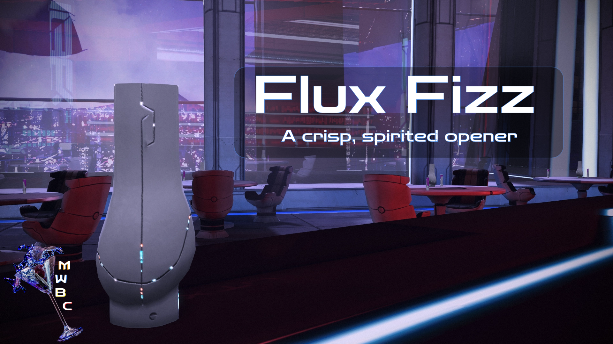

A New Universe
The Bar Crawl begins! Mass Effect 1, where it all started. A little rough, a little clunky, but full of heart and promise. This first leg of the journey focuses on smoothing edges, tightening seams, and keeping the magic intact.
Grab your drink, check your squad’s bar tabs, and let’s head out across the Citadel and beyond.
Batch
A curated night around the galaxy awaits!
Our first stop is on the Citadel in the famous Flux Bar and Casino. Here we will sample, what else could it be:
Flux Fizz: A crisp, spirited opener - refreshing the legend from the very first sip. 
Download it directly here (by clicking on the image):
or from the Nexus page:
Click Me!
Installation
Who say the journey can't be just as enjoyable as the destination? Here’s the secret to a good bar crawl:
- Open M3.
- Select Mod Management → Batch Mod Installer.
-
Load the batch file:
- If you downloaded the list through M3, it will appear automatically.
- If you downloaded it manually, place the file into:
(Your M3 folder)/mods/BatchModQueues
Then reopen the Batch Mod Installer.
-
Download every mod through the Batch Mod Installer. This ensures you get the correct versions of everything.
Depending on your Nexus membership and file sizes, this may take a little while. Please be patient with your aging barman (28). - Once everything has finished downloading, click Install this group.
- Launch the game once to make sure everything is working.
- Congratulations! You've survived the easy part. Before you start playing, head on over to Finish.
Manual
A colorful selection awaits the adventurous soul.
We begin our night on the Citadel at the famous Flux Bar and Casino, which offers a wide variety of spirits in addition to its addictive Quasar machines.
To download a mod, simply click on the link in the card and download the Main File, unless otherwise noted.
Patches / Compatibility
If you were to install the mods listed below from top to bottom, all relevant patches should appear when needed.
Remember that you are shaping your own flavor of drink here however, so be sure to always read thoroughly through each mod's Nexus page.
Bugfix mods are always a bit unglamorous by nature, but the work the community has put into these ever since the ME1Recalibrated days is beyond astonishing.
It also recolors the conversation wheel to a teal color, so each game gets its own color identity.
Think of it like a Transmog system.
Believe me, once you notice how non-descript the vanilla stats really are, you will never want to play without it.
An amazing effort by the community, though I am not sure how many people actually clamored to play Pinnacle Station again.
It's not a bad DLC just pretty basic. The authors added some cool QoL features though, check them out.
Small addition, big impact, in my opinion.
Let's be honest though: the thrill of playing cylindrical Frogger (among other things) to open every container wears thin pretty quickly.
There are a small handful of exceptions where it makes narrative sense to play them manually, like the Towers of Hanoi puzzle on Peak 15.
This is such an unbelievable QoL improvement it baffles me we needed a mod for it.
No more jumping to random star systems to see if Hackett pings you about your spaceship's extended warranty.
A small adjustment but I think it makes the story flow better.
Slightly anyway. Personally I've always been a Mako apologist, but this mod does improve the general feel of driving.
I recommend you use the "Classic" 1-60 leveling in-game when using this mod.
Personally I enjoy "Robes/Less Implants/Yellow Eyes" during the Prologue and the Citadel hearing, and "Armor/Less Implants" on Virmire.
Did you know that she has four(!) different models throughout the trilogy?
Takes a little getting used to but honestly it suits him.
Screenshots don't do this one justice, it really makes a tremendous difference.
Honestly though this is I think my favorite mod for LE1. It would take me ages to describe why or even scratch the surface of all that it does, so definitely check out the Nexus page.
Personal preference, really. It just reminds me way too much of those seventh-gen filters.
A monumental effort involving scene-by-scene restortation, artifact cleanup, modern Bink 2 encoding, and even recreating some cinematics in-engine.
Next: Into the Terminus
Congratulations on finishing the first stop on our journey across the galaxy.
Your drink empty and your game ready, whether you continue with me to the Terminus Systems in search of bolder flavors, or if you call it quits here, I hope you have enjoyed your time thus far.
If you decide to end the night here be sure to visit the "Finish" page before departing.